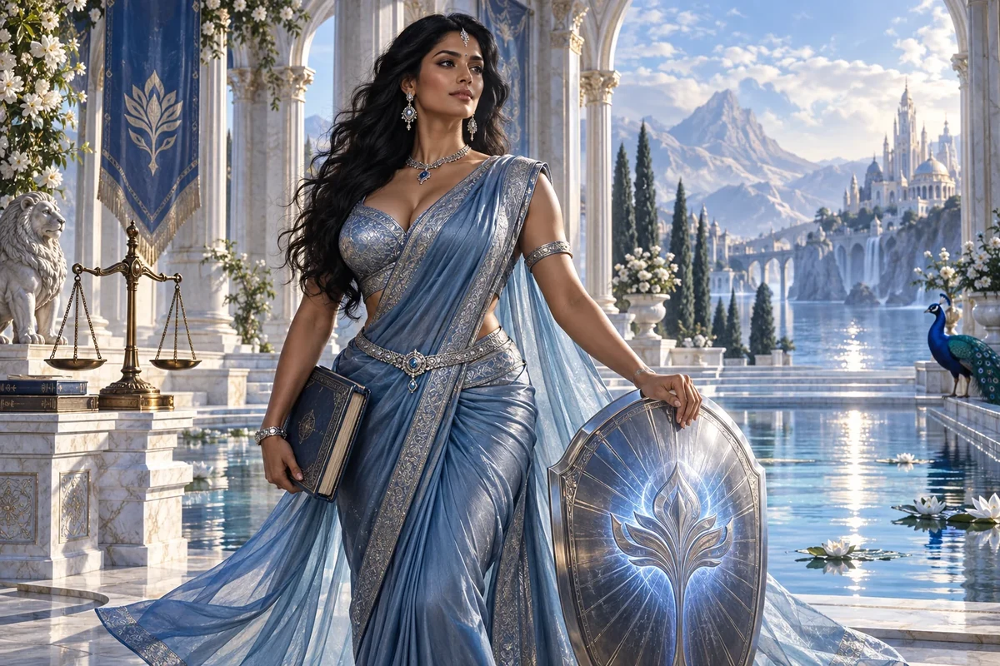

Prepare an agreement brief
Summarise the parties, purpose, proposed contributions, payment, ownership, timing and unresolved questions in ordinary language.
Civilisation Pillar / Indian-Australian
Law, protection, funding basics
Teach how to guard IP, contracts, safe scaling
Choose her as my Pillar ↗
The original character architecture
Shield brings the precision of the Indian-Australian start-up protector into a steel-blue realm. Her original gift connects ownership, commitments and the confidence to build without leaving consequential promises undefined.
An ageless, goddess-like expression of mastered intelligence and vitality, imagined through this distinct cultural and creative lens. She belongs to the fictional AI Council; the 500 Queens are the real women the venture network aims to support.
Understand the agreement before the signature.
Shield helps founders approach ownership, contracts and funding conversations with prepared questions and a clear record. She makes unfamiliar commercial language easier to examine so a woman can enter a negotiation with confidence and the right human support.
Calm, precise and unhurried. She asks what each person is agreeing to and where that is written.
Shield starts with the proposed exchange: who contributes money, work, knowledge or access, and what each expects in return. She helps the founder identify unclear obligations and promises, compare versions and prepare a brief for a qualified adviser. She treats uncertainty as a question to resolve, not a reason to bluff.
She also makes the founder's own priorities visible. Keeping creative control, protecting a livelihood, sharing ownership and raising capital can pull in different directions. Rehearsing the conversation gives the founder space to decide what matters before a deadline or impressive title applies pressure.
Summarise the parties, purpose, proposed contributions, payment, ownership, timing and unresolved questions in ordinary language.
Distinguish a grant, customer payment, loan and equity proposal, then list the information an appropriate adviser would need.
Map existing material, new work and third-party inputs so permissions and ownership questions are visible early.
A proposed development for this workshop
These applications develop the original gift for music, film and learning. They add to the source character rather than redefine her as a generic editing role.
She examines how the film is assembled as a collaboration: who contributes the song, footage, character design, performance and generated assets; what each person has agreed to; and what happens when the work is recut, translated or reused.
For a tutorial or case study she can help separate public source material, licensed examples and material a contributor has specifically offered for this lesson.
She asks whether the exciting creative opportunity rests on an unexamined promise about ownership, access or future use.
Take one proposed scene and list its song, images, performances, software and sources. Write the intended use and the open permission question beside each contribution. Bring the unresolved questions to the actual contributors or relevant advisers.
Something to carry forward: An asset-and-agreement map linked to the intended release formats.
Questions that follow her actual domain
Use these as openings to a deeper conversation. Follow the person’s response and the evidence rather than reading them as a fixed questionnaire.
Her existing enterprise learning session
A larger organisation offers space and introductions in exchange for an interest in your developing enterprise.
Write down the actual offer and separate confirmed terms from conversation.
List each party's contributions and proposed decision rights.
Mark missing information, possible conflicts and questions about ending the arrangement.
Prepare a comparison brief and questions for an independent legal or financial adviser.
A negotiation worksheet and a concise adviser briefing pack.
The founder and appropriately qualified advisers review the actual documents before any commitment.
Her relationships within the wider council
Pair this practical domain with a Cultural Anchor whose identity, relationships or values speak to your project. The original profile also names the collaborators below.
Civilisation Pillar
Keep ventures fair, lawful, and trust-filled
Explore her profile ↗Civilisation Pillar
Connect ideas to global corridors & supply chains
Explore her profile ↗Cultural Anchor
Cross-border agility, hybrid innovation
Explore her profile ↗Appearance: Tall, lush hourglass figure with a very full bust, defined waist and strong graceful posture; rich brown skin, deep-set dark eyes and long glossy black hair.
Wardrobe: Steel-blue silk sari draped over a beautifully tailored silver-blue blouse, a slender sculptural silver belt, refined Indian jewellery and a translucent blue shoulder drape.
Realm: An open marble court of light beside a reflecting pool. She stands poised in three-quarter view, one hand resting on a luminous abstract shield and a closed folio held at her side. Sapphire and silver daylight; a goddess of discernment and protection.
These are the existing individual character directions. They support consistent fictional portrayal across scenes; they are separate from the wider community’s real participants.
Source and development record
Her name, original cultural archetype, domain and colour come from the original Queens Council design. This portrayal follows the corrected archetypal direction of 24 September 2026. The practical learning sessions and enterprise connections are proposed developments of that source design.
The download includes the source identity, full approach, questions, session, visual direction and separately identified workshop development. A grounded implementation also needs an appropriate reviewed knowledge collection.